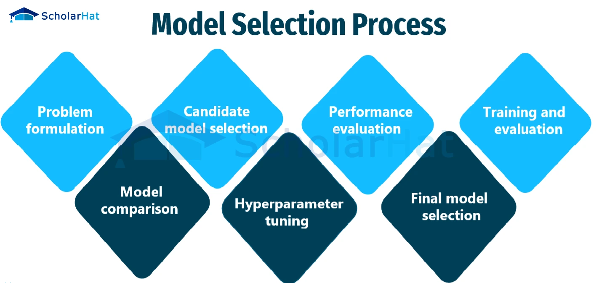

<div class="heading-wrapper"><div class="heading-children"><div><p dir="auto">Model selection is a crucial step in machine learning where you choose the most suitable algorithm and its hyperparameters for a specific task and dataset. It involves evaluating and comparing different models to find the one that generalizes well to unseen data, avoiding overfitting or underfitting.</p></div><div><ol>
<li data-line="0" dir="auto"><strong>AIC</strong> (Akaike Information Criterion) from frequentist probability</li>
<li data-line="1" dir="auto"><strong>BIC</strong>(Bayesian Information Criterion) from bayesian probabaility<br>
These are calculated using Log-likelihood which includes MSE (regression) and log_loss such as cross_entropy (classification).</li>
</ol></div><div><p dir="auto"><span alt="Pasted image 20240929152922.png" src="Pasted image 20240929152922.png" class="internal-embed media-embed image-embed is-loaded"></span></p></div><div class="heading-wrapper"><h3 data-heading="Load Libraries and data" dir="auto" class="heading" id="Load_Libraries_and_data"><div class="heading-collapse-indicator collapse-indicator collapse-icon"><svg xmlns="http://www.w3.org/2000/svg" width="24" height="24" viewbox="0 0 24 24" fill="none" stroke="currentColor" stroke-width="2" stroke-linecap="round" stroke-linejoin="round" class="svg-icon right-triangle"><path d="M3 8L12 17L21 8"></path></svg></div>Load Libraries and data</h3><div class="heading-children"><div><pre class="language-python" tabindex="0"><code class="language-python is-loaded"><span class="token keyword">from</span> sklearn<span class="token punctuation">.</span>model_selection <span class="token keyword">import</span> train_test_split
<span class="token keyword">from</span> sklearn<span class="token punctuation">.</span>linear_model <span class="token keyword">import</span> LogisticRegression
<span class="token keyword">from</span> sklearn<span class="token punctuation">.</span>svm <span class="token keyword">import</span> SVC
<span class="token keyword">from</span> sklearn<span class="token punctuation">.</span>ensemble <span class="token keyword">import</span> RandomForestClassifier
<span class="token keyword">from</span> sklearn<span class="token punctuation">.</span>metrics <span class="token keyword">import</span> accuracy_score

<span class="token comment"># Load or prepare your data (replace with your data loading)</span>
data <span class="token operator">=</span> pd<span class="token punctuation">.</span>read_csv<span class="token punctuation">(</span><span class="token string">"your_data.csv"</span><span class="token punctuation">)</span>
X <span class="token operator">=</span> data<span class="token punctuation">.</span>drop<span class="token punctuation">(</span><span class="token string">"target"</span><span class="token punctuation">,</span> axis<span class="token operator">=</span><span class="token number">1</span><span class="token punctuation">)</span>  <span class="token comment"># Features</span>
y <span class="token operator">=</span> data<span class="token punctuation">[</span><span class="token string">"target"</span><span class="token punctuation">]</span>  <span class="token comment"># Target variable</span>
</code><button class="copy-code-button">Copy</button></pre></div></div></div><div class="heading-wrapper"><h3 data-heading="Train Test Split or CV" dir="auto" class="heading" id="Train_Test_Split_or_CV"><div class="heading-collapse-indicator collapse-indicator collapse-icon"><svg xmlns="http://www.w3.org/2000/svg" width="24" height="24" viewbox="0 0 24 24" fill="none" stroke="currentColor" stroke-width="2" stroke-linecap="round" stroke-linejoin="round" class="svg-icon right-triangle"><path d="M3 8L12 17L21 8"></path></svg></div>Train Test Split or CV</h3><div class="heading-children"><div><pre class="language-python" tabindex="0"><code class="language-python is-loaded"><span class="token comment"># Split data into training and testing sets</span>
X_train<span class="token punctuation">,</span> X_test<span class="token punctuation">,</span> y_train<span class="token punctuation">,</span> y_test <span class="token operator">=</span> train_test_split<span class="token punctuation">(</span>X<span class="token punctuation">,</span> y<span class="token punctuation">,</span> test_size<span class="token operator">=</span><span class="token number">0.2</span><span class="token punctuation">,</span> random_state<span class="token operator">=</span><span class="token number">42</span><span class="token punctuation">)</span>
</code><button class="copy-code-button">Copy</button></pre></div></div></div><div class="heading-wrapper"><h3 data-heading="Define and Train Models" dir="auto" class="heading" id="Define_and_Train_Models"><div class="heading-collapse-indicator collapse-indicator collapse-icon"><svg xmlns="http://www.w3.org/2000/svg" width="24" height="24" viewbox="0 0 24 24" fill="none" stroke="currentColor" stroke-width="2" stroke-linecap="round" stroke-linejoin="round" class="svg-icon right-triangle"><path d="M3 8L12 17L21 8"></path></svg></div>Define and Train Models</h3><div class="heading-children"><div><pre class="language-python" tabindex="0"><code class="language-python is-loaded"><span class="token comment"># Define models to compare (using default hyperparameters for simplicity)</span>
models <span class="token operator">=</span> <span class="token punctuation">{</span>
    <span class="token string">"Logistic Regression"</span><span class="token punctuation">:</span> LogisticRegression<span class="token punctuation">(</span><span class="token punctuation">)</span><span class="token punctuation">,</span>
    <span class="token string">"SVM"</span><span class="token punctuation">:</span> SVC<span class="token punctuation">(</span><span class="token punctuation">)</span><span class="token punctuation">,</span>
    <span class="token string">"Random Forest"</span><span class="token punctuation">:</span> RandomForestClassifier<span class="token punctuation">(</span><span class="token punctuation">)</span>
<span class="token punctuation">}</span>

output <span class="token operator">=</span> <span class="token punctuation">{</span><span class="token punctuation">}</span>

<span class="token comment"># Train and evaluate each model</span>
<span class="token keyword">for</span> name<span class="token punctuation">,</span> model <span class="token keyword">in</span> models<span class="token punctuation">.</span>items<span class="token punctuation">(</span><span class="token punctuation">)</span><span class="token punctuation">:</span>
    model<span class="token punctuation">.</span>fit<span class="token punctuation">(</span>X_train<span class="token punctuation">,</span> y_train<span class="token punctuation">)</span>
    predictions <span class="token operator">=</span> model<span class="token punctuation">.</span>predict<span class="token punctuation">(</span>X_test<span class="token punctuation">)</span>
    accuracy <span class="token operator">=</span> accuracy_score<span class="token punctuation">(</span>y_test<span class="token punctuation">,</span> predictions<span class="token punctuation">)</span>
    <span class="token keyword">print</span><span class="token punctuation">(</span><span class="token string-interpolation"><span class="token string">f"</span><span class="token interpolation"><span class="token punctuation">{</span>name<span class="token punctuation">}</span></span><span class="token string"> Test Accuracy: </span><span class="token interpolation"><span class="token punctuation">{</span>accuracy<span class="token punctuation">:</span><span class="token format-spec">.2f</span><span class="token punctuation">}</span></span><span class="token string">"</span></span><span class="token punctuation">)</span>
    output<span class="token punctuation">[</span>name<span class="token punctuation">]</span> <span class="token operator">=</span> accuracy
</code><button class="copy-code-button">Copy</button></pre></div></div></div><div class="heading-wrapper"><h3 data-heading="Pick the best performing model" dir="auto" class="heading" id="Pick_the_best_performing_model"><div class="heading-collapse-indicator collapse-indicator collapse-icon"><svg xmlns="http://www.w3.org/2000/svg" width="24" height="24" viewbox="0 0 24 24" fill="none" stroke="currentColor" stroke-width="2" stroke-linecap="round" stroke-linejoin="round" class="svg-icon right-triangle"><path d="M3 8L12 17L21 8"></path></svg></div>Pick the best performing model</h3><div class="heading-children"><div><pre class="language-python" tabindex="0"><code class="language-python is-loaded"><span class="token keyword">print</span><span class="token punctuation">(</span>output<span class="token punctuation">)</span>
</code><button class="copy-code-button">Copy</button></pre></div><div><blockquote dir="auto">
<p>Once the best model is identified, finetuning can be performed on it to further improve the performance</p>
</blockquote></div><div class="mod-footer"></div></div></div></div></div></div></div>